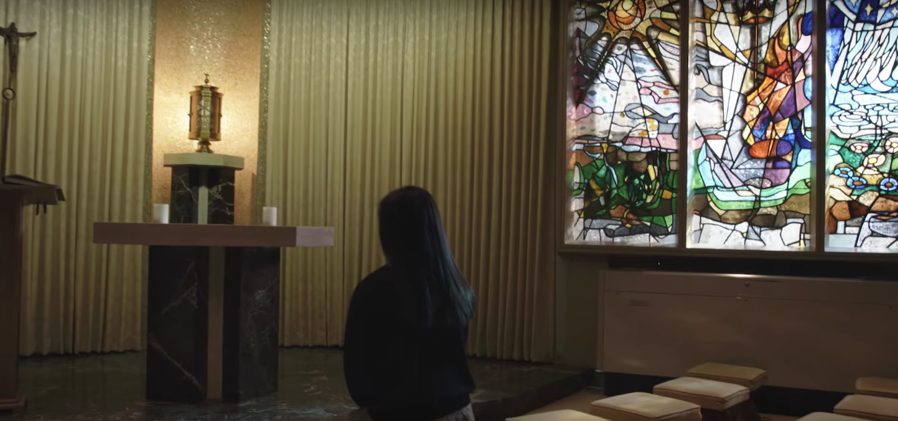

Fall Sports
Winter Sports
Spring Sports
Service
Spiritual Aspects of Freshman Year at Padua

Prayer before classes and school masses are major parts of attending
Catholic school, but not only parts. Here are some things that current Padua
Freshman say about their spirituality to rising freshman.
- Though your schedule is filled with homework, tests, sports, and friends, you should still set aside time for God.
- Padua students pray at the beginning and end of school and before each class.
- We attend mass as a school on holy days of obligation, religious holidays, and Padua's patron saints days.
- Padua gives you the option to participate in the sacrament of reconciliation during advent and lent.
- The chapel, on the second floor, is a great place to pray or have a quiet time with God.